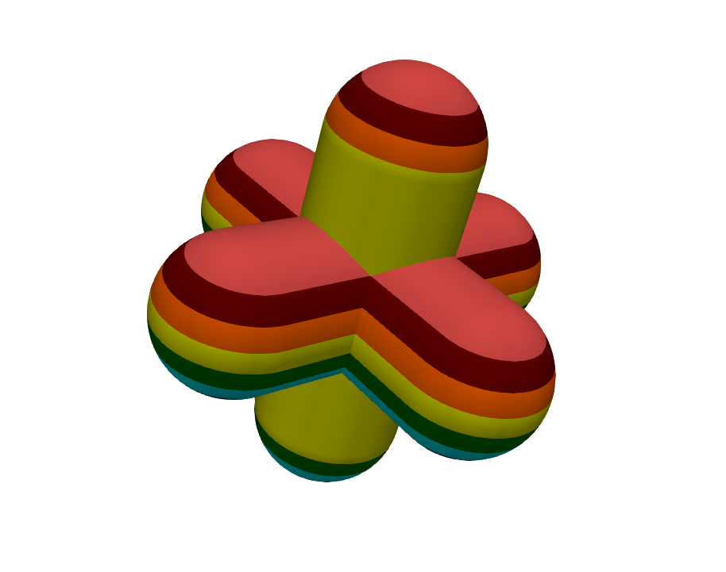
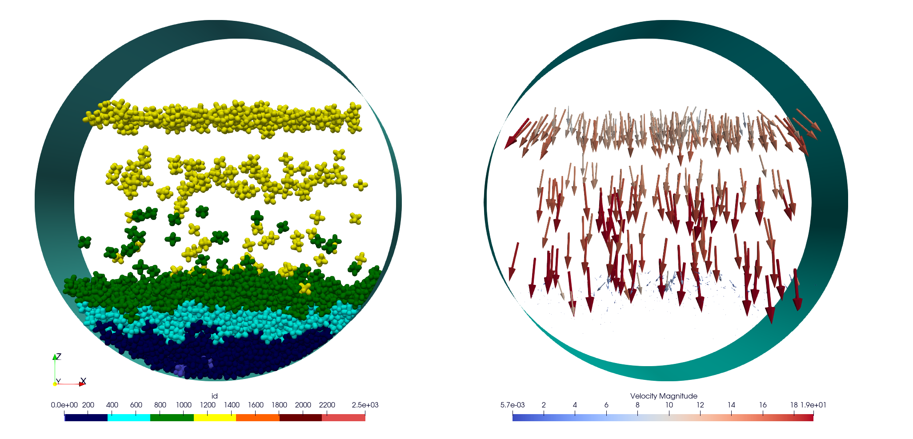
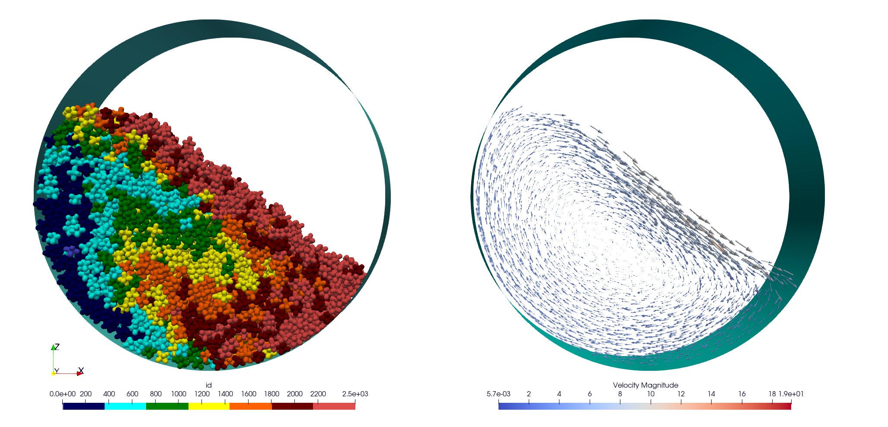

12. Tutorials
12.1. Polyhedra tutorials
12.1.1. Build Your Rotating Drum Simulation With Hexapods And A Particle Generator
In this section, we will outline the steps to generate a set of hexapods in a rotating drum and then initiate the simulation. The simulation will proceed in three steps:
The first step involves generating the hexapods within the cylinder. (generator.msp)
The second step is to wait for all hexapods to be deposited into the cylinder. (wait.msp)
Finally, the last step is to execute the simulation by setting the cylinder in motion. (run.msp)
The input files are available in the ‘tutorial/hexa-rotating-drum’ folder.
The ingredients for generating the hexapods are:
defining the polyhedron shape
setting up the cylinder
determining the contact force between the polyhedra
defining a spatial zone for particle generation
specifying an appearance frequency
initializing the generated polyhedra
The chosen shape file is an hexapods in the input file, as follows:
<
name alpha3
radius 0.237770037899799
preCompDone y
nv 6
0.475540075799599 0 0
-0.475540075799599 0 0
0 0.475540075799599 0
0 -0.475540075799599 0
0 0 0.475540075799599
0 0 -0.475540075799599
ne 3
0 1
2 3
4 5
nf 0
obb.extent 0.713310113699398 0.713310113699398 0.713310113699398
obb.e1 1 0 0
obb.e2 0 1 0
obb.e3 0 0 1
obb.center 0 0 0
volume 0.523598775598299
I/m 0.13266 0.13266 0.13266
>
We add a paraview polydata created for this shape (exaDEM doesn’t display correclty without face as hexapods, otherwise during the init step, a your_shape.vtk is written).
{kind=link}
For this simulation, we choose to fill an infinite cylinder centered at (10,3.75,10) with a radius of 16. This detection is added during the construction of neighbor lists (nbh_polyhedron operator).
setup_drivers:
- add_cylinder:
id: 0
center: [10, 10, 10]
axis: [1, 0, 1]
radius: 16
angular_velocity: [0,0,0]
Note
setup_drivers is a default operator integrated in the default execution graph of exaDEM. By default, this operator is set to nop for no operator.
We use the Hooke’s law to compute contact force between the polyhedra/polyhedra and cylinder/polyhedra. Gravity is applied everywhere.
compute_force:
- gravity_force
- hooke_polyhedron:
symetric: true
config: { rcut: 0.0 m , dncut: 0.0 m, kn: 10000, kt: 10000, kr: 0.0, fc: 0.0, mu: 0.1, damp_rate: 0.999}
config_driver: { rcut: 0.0 m , dncut: 0.0 m, kn: 10000, kt: 10000, kr: 0.0, fc: 0.0, mu: 0.1, damp_rate: 0.999}
Now, we need to define a spatial zone for particle generation, this zone is the box defined by the inf point = (0,0,19) and sup point (20,7.5,20).
particle_regions:
- AREA:
bounds: [ [ 0 , 0 , 19 ] , [ 20 , 7.5 , 20 ] ]
Now we add a first lattice generator operator to initialize the simulation, note that init_domain is set to true. In addition, if you want that the periodic condition (y-axis) fit with your AREA, this lattice generator should be correctly filled, i.e, repeats[Y] * y_size[Y] = bounds[Y] = 5 * 1.5 = 7.5 .
first_particles:
- lattice:
init_domain: true
structure: SC
types: [ 0 ]
size: [ 1.5 , 1.5 , 1.5 ]
repeats: [ 15, 5 , 15 ]
region: AREA
The following block consists in created our operator that adds hexapods. Note that init_domain is set to false.
add_particles:
- lattice:
init_domain: false
structure: SC
types: [ 0 ]
size: [ 1.5 , 1.5 , 1.5 ]
repeats: [ 15 , 5 , 15 ]
region: AREA
Then we need to initialize hexapods in this region (AREA). The default density is 1, the volume information used to compute the mass is stored in the shape.
init_new_particles:
- density_from_shape
- set_rand_velocity:
region: AREA
var: 0.1
mean: [0.0,0.0,-10.0]
- inertia_from_shape
- set_quaternion:
region: AREA
- radius_from_shape:
region: AREA
Now, we can define our input_data operator:
input_data:
- read_shape_file:
filename: alpha3.shp
- first_particles
- init_new_particles
The following block consists in the overload of add_generated_particles operator that is set to nop by default. Note that this operator is triggered by the frequency simulation_generator_frequency: 40000 defined in the global operator, default is -1.
add_generated_particles:
- add_particles
- init_new_particles
Step one is the generator.msp file. To run the simulation, use the following command.
mpirun -n 2 ./exaDEM generator.msp --omp-num-threads 2
Note
Make sure that the alpha3.shp file is in the same location as the simulation.
Picture at the middle of the first step:
{kind=link}
Picture at the end of the first step:

The step 2 consists in waiting that the deposit is finished from timestep 1,200,000 (12s) to 1,400,000 (14s).
First, load the snapshot at time step 1,200,000 and disable generation. It’s important not to forget to define the cutoff radius for the hexapods used with the operator polyhedra_define_radius for building the Verlet lists
input_data:
- read_shape_file:
filename: alpha3.shp
- read_dump_particle_interaction:
filename: exaDEM_001200000.dump
- radius_from_shape
Disable the hexapod generator:
simulation_generator_frequency: -1
Step two corresponds to the wait.msp file. To run this simulation, use the following command.
mpirun -n 2 ./exaDEM wait.msp --omp-num-threads 2
Picture at the end of the second step, the desposit is stable (i.e. no velocity):
{kind=link}
The step 3 consists in running the rotating drum simulation from timestep 1,400,000 (14s) to 5,000,000 (50s).
Initiate motion of your drum. You can determine the angular velocity using the Froude number and deduce the angular velocity from it. Fr = w^2 * R / g or w = sqrt(Fr * g / R). In our case, we desire a cascading behavior with a Froude number of 0.2, w = sqrt( 0.2 * 9.81 / 16 ) = 0.350178526 ~= 0.35 rad.s-1 .
angular_velocity: [0,0.35,0]
In addition, we display the contact network (normal force) between the hexapods.
+dump_data_paraview:
- dump_contact_network:
config: { rcut: 0.0 m , dncut: 0.0 m, kn: 10000, kt: 10000, kr: 0.0, fc: 0.0, mu: 0.1, damp_rate: 0.999}
basename: hexapods
Warning
Currently, we need to specify Hooke parameters to calculate the contact network, but this option will disappear with future development (hooke parameters factory).
Step three corresponds to the run.msp file. To run this simulation, use the following command.
mpirun -n 2 ./exaDEM run.msp --omp-num-threads 2
This is the final contact network at 50s.

Picture at the end of the third step:
{kind=link}
12.2. Developers Tutorials
12.2.1. Add Your Own mutator_field Operator
This is a minimal example to add your own mutator_field operator:
[1] Set class name: SetYourFields
[2] Set fields: field::_YOUR_FIELD_1, field::_YOUR_FIELD_2, …, field::_YOUR_FIELD_N
[3] Set types: YOUR_TYPE_1, YOUR_TYPE_Z, … , YOUR_TYPE_N
[4] Set field slots: your_field_1, your_field_2, …, your_field_N
[5] Set operator name: set_your_fields
[6] Specify template: SetYourFields
#include <exaDEM/set_fields.h>
namespace exaDEM
{
using namespace exanb;
template<typename GridT
, class = AssertGridHasFields< GridT, field::_YOUR_FIELD_1, field::_YOUR_FIELD_2, ..., field::_YOUR_FIELD_N>
>
class SetYourFields : public OperatorNode
{
static constexpr YOUR_TYPE_1 default_field_value_1 = YOUR_TYPE_1();
static constexpr YOUR_TYPE_2 default_field_value_2 = YOUR_TYPE_2();
...
static constexpr YOUR_TYPE_N default_field_value_N = YOUR_TYPE_N();
using ComputeFields = FieldSet< field::_YOUR_FIELD_1, field::_YOUR_FIELD_2, ..., field::_YOUR_FIELD_N>;
static constexpr ComputeFields compute_field_set {};
ADD_SLOT( GridT, grid , INPUT_OUTPUT );
ADD_SLOT( YOUR_TYPE_1, your_field_1, INPUT, default_radius, DocString{"default value for all particles"} );
ADD_SLOT( YOUR_TYPE_2, your_field_2, INPUT, default_radius, DocString{"default value for all particles"} );
...
ADD_SLOT( YOUR_TYPE_N, your_field_N, INPUT, default_radius, DocString{"default value for all particles"} );
public:
inline std::string documentation() const override final
{
return R"EOF(
This operator sets the ... value(s) for every particles.
)EOF";
}
inline void execute () override final
{
SetFunctor<YOUR_TYPE_1,YOUR_TYPE_2, ... , YOUR_TYPE_N> func = {
{*your_field_1},
{*your_field_2},
... ,
{*your_field_N}
};
compute_cell_particles(
*grid , false , func ,
compute_field_set ,
gpu_execution_context() ,
gpu_time_account_func()
);
}
};
template<class GridT> using SetYourFieldsTmpl = SetYourFields<GridT>;
// === register factories ===
CONSTRUCTOR_FUNCTION
{
OperatorNodeFactory::instance()->register_factory( "set_your_fields", make_grid_variant_operator< SetYourFieldsTmpl > );
}
}